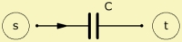

|
 |
| Purpose | Technical capacitance |
| Type | Network element (2 pole) |
| Domain | Electric |
| Used in | System |
|
|
Capacitor 'Any name'
Node=s=t
C=
Rp=
Ls=
Rs=
Capacitor implements the model of a technical capacitor in the network. C= is the capacitance of the capacitor. You can optionally specify Rp=, Rs= and Ls=. Although Rs and Ls are connected in series with the capacitance C, you would not require any additional network nodes.
Note, since C, Rp, Rs and Ls are combined to one component, the internal currents and voltages cannot be observed. If you need to inspect these, you would need to specify Rp, Rs and Ls as individual elements.
1) No losses
Capacitor 'C1'
Node=1=2 C=10uF
2) With dielectric losses
Capacitor 'C1'
Node=1=2 C=10uF
Rp=50Mohm
3) Similar to the second example, but additionally with an inductance.
Capacitor 'C1'
Node=1=2 C=10uF
Rp=50Mohm Rs=0.5ohm Ls=4uH
4) Same as example 3 but with individual elements.
Capacitor 'C1' Node=1=2 C=10uF Resistor 'Rp' Node=1=2 R=50Mohm Resistor 'Rs' Node=2=3 R=0.5ohm Resistor 'Ls' Node=3=4 L=4uH